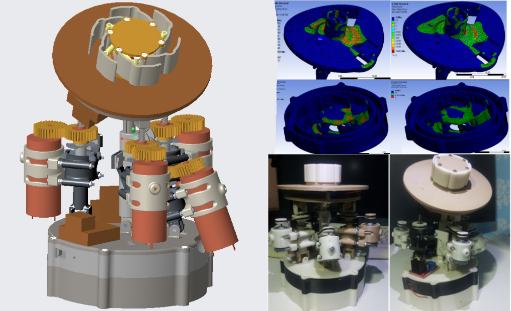
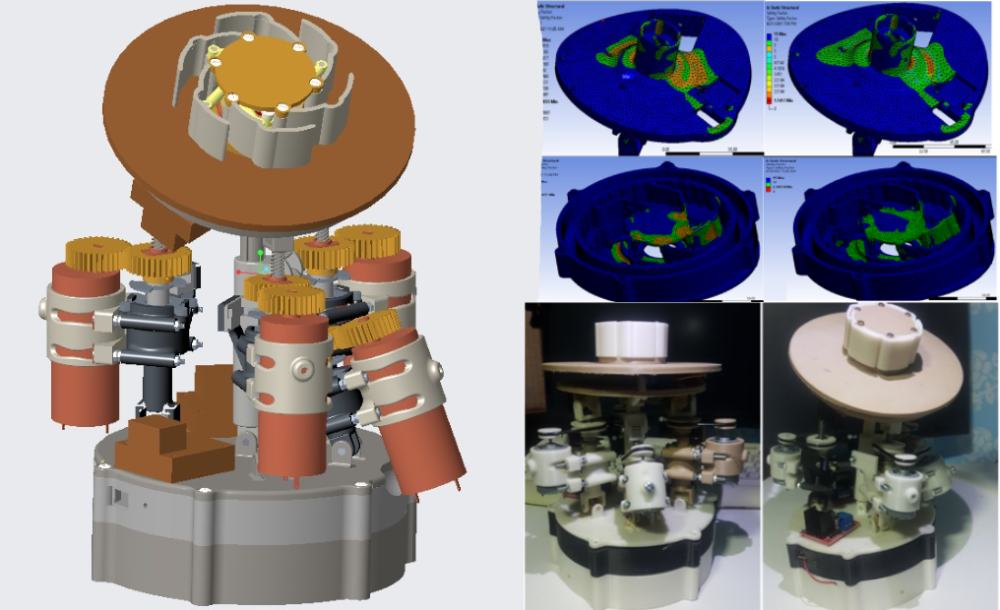
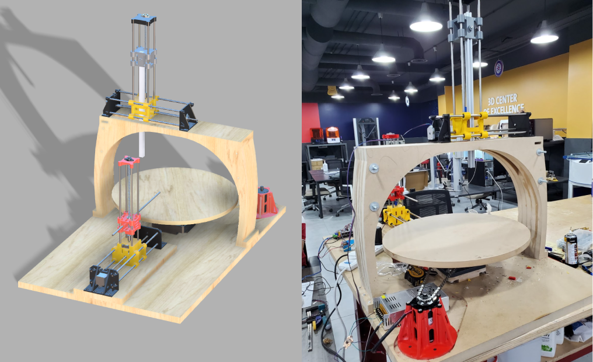
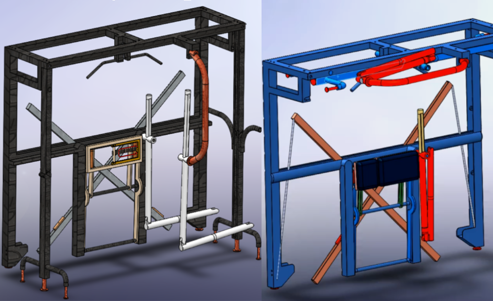
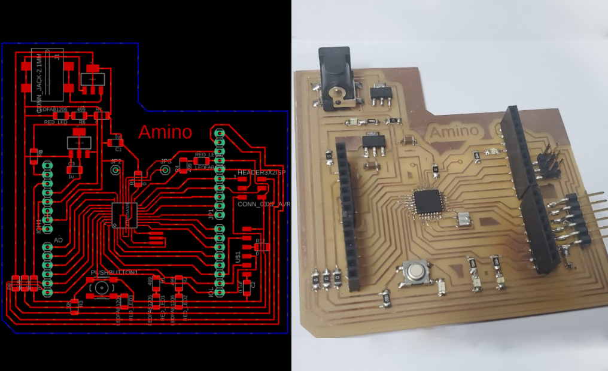

june 6, 2022
I am Abdelrahman Amin Yousef but you can call me Amin as my friends used to do. I have a bachelor’s degree in mechanical engineering, and that helped me a lot to get a great knowledge in different Mechanical Engineering approaches, principles and CAD software. Also I have experience in designing and implementing wide range of designs according to specifications by using digital fabrication. However, I am working everyday to improve myself in all aspects. I love doing the different experiments, learning about different cultures and making new friends from all over the world.
Visit this website to see my work!
I was born in 1998 in a beautiful country in the Middle East called Jordan where I have lived most of my life, I went to the local university, the University of Jordan, where I studied mechanical Engineering. During my studies, Industrial Design and Digital Fabrication gained my interest, and from here I began my journey of learning it.
 

A self Assembly Robot (Modular Robot) consists of a group of similar cells (Main part), each cell has five degrees of freedom. These cells are formed according to the shape and required function. The project involved: Cell design
using Cero, force simulation using Ansys, mathematical model derivation , control circuit design and model fabrication.

Clay forming machine is a 4 axis CNC with rotating disc which designed with the motive of automating the process of forming clay, which will give this industry many advantages, the most important of which is accelerating the production process and increasing accuracy, in addition to the possibility of forming clay in ways that cannot be done by human hands.

ur-One Bionic machine is procthatic hand which to give a second chance to people who lost their hands by creating a prosthetic hand that perfectly fits and satisfies their daily needs, What distinguishes this project is that the information in it will remain open source, easily to fabricate, easily to assimbly and cheap. This gives it access to a large number of people.

Due to COVID - 19 , number of people that used to do sport in general or going to the gym decreased , and this is happen for several reasons such as avoiding to contact with others. The design start from here , a home gum Machin that can be folded to reduce the space used and contains more than one device to cover the needs that can be found in the normal gym.

Donec eget ex magna. Interdum et malesuada fames ac ante ipsum primis in faucibus. Pellentesque venenatis dolor imperdiet dolor mattis sagittis magna etiam.

Soft robotics is a branch of robotics concerned with the design, control, and construction of robots made of flexible materials rather than rigid linkages. Moulding and casting can be a technique that allows making soft robotics , this technique has been of great use for rubbers and silicone work, I make it in three steps of mould and control it by Flow.io platform that could program it and get this amazing result .
Donec eget ex magna. Interdum et malesuada fames ac ante ipsum primis in faucibus. Pellentesque venenatis dolor imperdiet dolor mattis sagittis magna etiam.

Donec eget ex magna. Interdum et malesuada fames ac ante ipsum primis in faucibus. Pellentesque venenatis dolor imperdiet dolor mattis sagittis magna etiam.